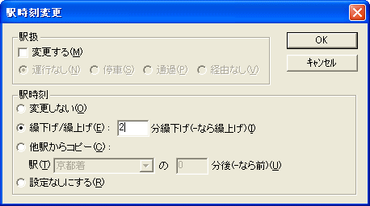

フォーカスセルの位置の駅時刻を、変更します。

駅扱を変更する場合は、チェックをONにしてください。
チェックを ON にした場合は、駅扱をどのように変更するかを、[運行なし]・[停車]・[通過]・[経由なし] から選択してください。
フォーカスセルの駅時刻の変更内容を、選択してください。
[変更しない]・・・駅時刻は変更しません。
[繰下げ/繰上げ]・・・フォーカスセルのある駅時刻を、現在の設定値のｎ分後にします（繰上げ・繰下げ）。繰下げの場合は正の数・繰上げの場合は負の数を指定してください。
[他駅からのコピー]・・・フォーカスセルのある駅時刻を、指定の駅時刻のｎ分後にします。ｎ分前にする場合は、負の数を指定してください。
この機能で駅時刻を変更した場合、後の駅への繰上げ・繰下げは行われません。
[設定なしにする]・・・フォーカスセルのある駅時刻を、[設定なし]にします。
参照：多数の列車の駅時刻を変更（『駅時刻変更』機能）